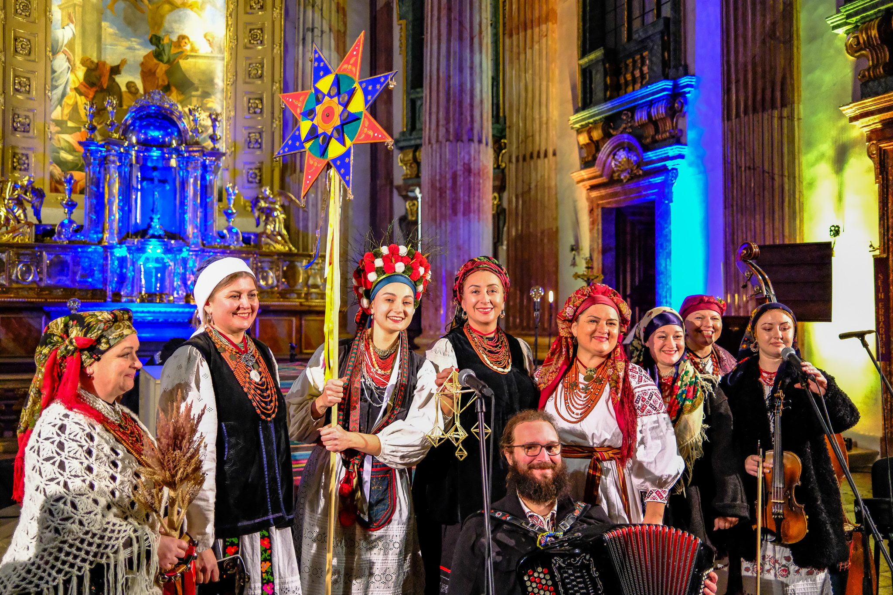

Aktuality ·
Staroukrajinské Vánoce u Jošta 2026
V sobotu 5. prosince 2026 zazpívá Kupava staroukrajinské koledy a ščedrivky na Moravském náměstí v Brně.

Ukrajinský folklorní soubor Kupava zve na adventní program Staroukrajinské Vánoce u Jošta. V sobotu 5. prosince 2026 zazní u sochy Jošta Moravského na Moravském náměstí v Brně ukrajinské koledy a ščedrivky v tradičním vícehlasu, s živou hudbou a vánoční hvězdou.
Staroukrajinské Vánoce patří ke stálému programu souboru – v posledních letech jsme je uvedli u Jošta Moravského, v kostele sv. Josefa v Brně i ve Vídni.
Kontakt ← Zpět na hlavní stránku